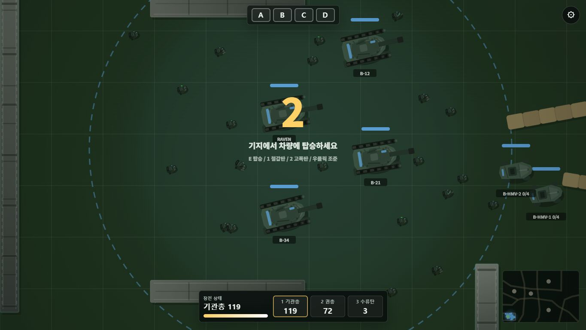

전차가 전선을 연다
방향, 엄폐, 포각을 읽고 아군 보병이 들어갈 길을 만들어야 합니다.

Official Alpha Site
전차가 길을 열고, 보병이 거점을 붙잡는 2D 온라인 전술 전차전. 지금 빌드는 4v4 알파 플레이와 실전 피드백 수집을 목표로 다듬는 중입니다.
Gameplay
방향, 엄폐, 포각을 읽고 아군 보병이 들어갈 길을 만들어야 합니다.
전차만으로 끝나지 않고, 보병 역할 전환과 거점 장악이 승패를 만듭니다.
방 생성, 입장, 시작, 종료, 복귀까지 이어지는 한 판 루프를 우선 검증합니다.
Alpha Access
Faction Skins
Intel Feed
관리자 이동 허브가 아니라, 플레이어가 게임을 보고 바로 실행하는 공식 사이트 흐름으로 분리했습니다.
방 생성, 입장, 시작, 역할 변경, 종료, 복귀까지 온라인 플레이에서 실제 문제가 드러나는 구간을 우선 확인합니다.
만석 이후 입장자는 관전자로 보내고, 관리자는 관전 중 바로 문제를 기록하는 구조를 다음 후보로 둘 수 있습니다.
Ready for Alpha